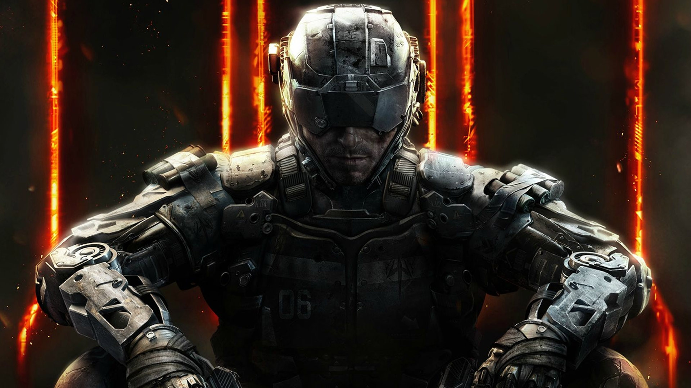
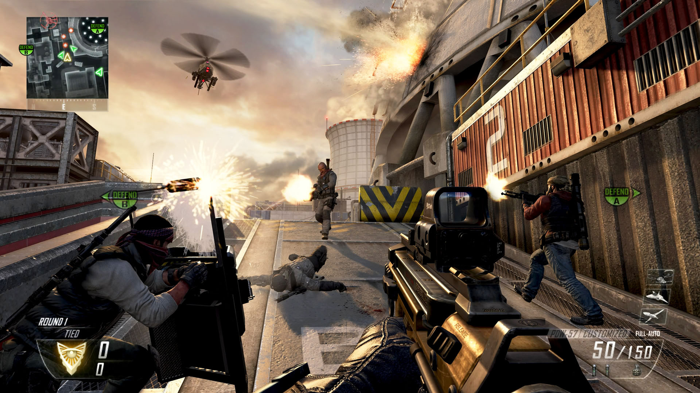
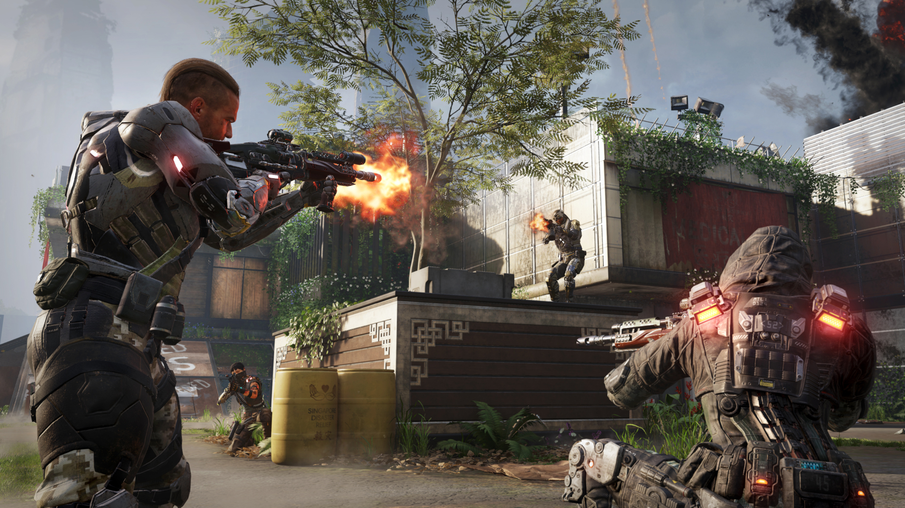
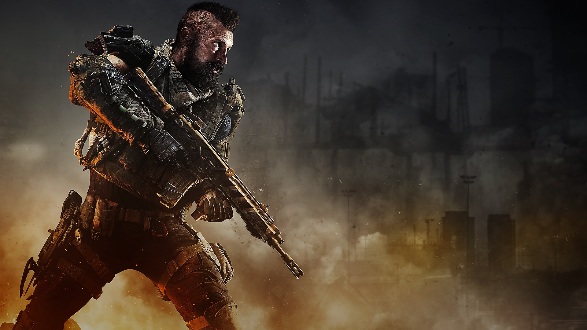

CALL OF DUTY: BLACK OPS
Call of Duty: Black Ops is a 2010 first-person shooter video game developed by Treyarch and published by Activision. It was released worldwide in November 2010 for Microsoft Windows, the PlayStation 3, Xbox 360, and Wii, with a separate version for Nintendo DS developed by n-Space. Aspyr later released the game for OS X in September 2012. It is the seventh title in the Call of Duty series and the third to be developed by Treyarch. It serves as the sequel to Call of Duty: World at War.
Set in the 1960s during the Cold War, the game's campaign follows CIA operative Alex Mason as he attempts to recall certain memories in combat in order to locate a numbers station. This station is due to transmit broadcasts to sleeper agents who are bound to use chemical weapons across the United States. Mason and CIA operative Jason Hudson are the game's main playable characters, as well as Red Army soldier Viktor Reznov in only one mission. Locations featured in the game include Cuba, Laos, Vietnam, the Soviet Union, the United States, Hong Kong, and the Arctic Circle.
Set in the 1960s during the Cold War, the game's campaign follows CIA operative Alex Mason as he attempts to recall certain memories in combat in order to locate a numbers station. This station is due to transmit broadcasts to sleeper agents who are bound to use chemical weapons across the United States. Mason and CIA operative Jason Hudson are the game's main playable characters, as well as Red Army soldier Viktor Reznov in only one mission. Locations featured in the game include Cuba, Laos, Vietnam, the Soviet Union, the United States, Hong Kong, and the Arctic Circle.

Gameplay
Black Ops is a first-person shooter, retaining the same gameplay mechanics as previous Call of Duty titles. The player assumes the role of a foot soldier who can wield various firearms (only two of which can be carried at once), throw grenades and other explosives, and use other equipment as weapons. A player close enough to an enemy can kill with one knife blow. A character can take three stances: standing, crouching, or prone. Each affects the rate of movement, accuracy, and stealth. The player can drop to the prone stance from the standing stance while running (colloquially known as "dolphin diving"), and can momentarily sprint before having to stop.
The screen glows red to indicate damage to a player's health, which regenerates over time. When the character is within the blast radius of a live grenade, an on-screen marker indicates where it is in relation to the player, helping the player to move away or to throw it back. Among the weapons new to the series in Black Ops are crossbows with bolts and explosive ammunition, Dragon's Breath rounds and ballistic knives.
The screen glows red to indicate damage to a player's health, which regenerates over time. When the character is within the blast radius of a live grenade, an on-screen marker indicates where it is in relation to the player, helping the player to move away or to throw it back. Among the weapons new to the series in Black Ops are crossbows with bolts and explosive ammunition, Dragon's Breath rounds and ballistic knives.

Multiplayer
The online multiplayer mode of Black Ops usually revolves around two teams on a specific mission. For example, in Team Deathmatch the team with the most kills wins, while in Capture the Flag, players take the other team's flags and return it to their base. Additionally, there is Free For All in which players aren't separated into teams. Not including Downloadable maps, there are 14 different maps. Black Ops retains the experience points and unlockable reward system that has been kept since Call of Duty 4. The multiplayer focuses on socialization and customization.
"Create-a-Class 2.0" allows enhanced personalization with appearance items as well as upgradable perks; weapons are extensively customizable with writing, emblems, attachments, and camouflage painting. Even reticles can be modified. There is more than one style for an attachment, which allows for a lot more personalized weaponry; for example, the player can choose between a red dot sight or a reflex sight, both of which share many of the same traits, although the red dot fills up less of the screen (something desired by many players). Character models depend on the first tier perk instead of the weapon's type. Furthermore, face paints can be unlocked. New custom killstreak rewards include explosive R/C cars, guided missiles, and controllable attack helicopters.
"Create-a-Class 2.0" allows enhanced personalization with appearance items as well as upgradable perks; weapons are extensively customizable with writing, emblems, attachments, and camouflage painting. Even reticles can be modified. There is more than one style for an attachment, which allows for a lot more personalized weaponry; for example, the player can choose between a red dot sight or a reflex sight, both of which share many of the same traits, although the red dot fills up less of the screen (something desired by many players). Character models depend on the first tier perk instead of the weapon's type. Furthermore, face paints can be unlocked. New custom killstreak rewards include explosive R/C cars, guided missiles, and controllable attack helicopters.

Single-player
The player controls the protagonist, CIA SAD/SOG operative and former U.S. Marine Force Recon Captain Alex Mason (Sam Worthington). Occasionally, CIA paramilitary operations officer Jason Hudson (Ed Harris) and some other characters are playable to progress the story. Alex is often joined by fellow operatives Force Recon Master Sergeant Frank Woods (James C. Burns) and Navy UDT Chief Joseph Bowman (Ice Cube), while Jason teams up with Grigori Weaver (Gene Farber), a Russian-born field operative. Viktor Reznov (Gary Oldman), a key character from the Soviet campaign in World at War, returns along with that game's Russian protagonist Dimitri Petrenko (Boris Kievsky) also making an appearance.
Oldman also voices Daniel Clarke, a British scientist assisting in the development of Project Nova. Opposing the CIA are the leaders of Project Nova: former Red Army General Nikita Dragovich (Eamon Hunt), Colonel Lev Kravchenko (Andrew Divoff), and former Nazi scientist Doctor Friedrich Steiner (Mark Bramhall). Black Ops also features several historical figures: during the story Mason meets John F. Kennedy, Robert McNamara, and Fidel Castro.
Oldman also voices Daniel Clarke, a British scientist assisting in the development of Project Nova. Opposing the CIA are the leaders of Project Nova: former Red Army General Nikita Dragovich (Eamon Hunt), Colonel Lev Kravchenko (Andrew Divoff), and former Nazi scientist Doctor Friedrich Steiner (Mark Bramhall). Black Ops also features several historical figures: during the story Mason meets John F. Kennedy, Robert McNamara, and Fidel Castro.
Gameplay Trailer